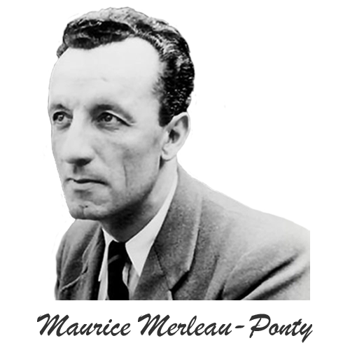
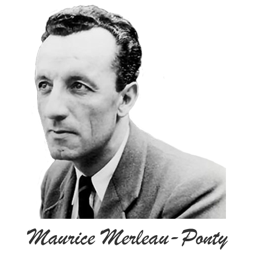

To choose authenticity is also to choose amorphousness.
When we accept responsibility for the way we invent our own selves,
we must give up the self we have invented. We must kill our gods,
or at least send them to the Sinai of the unconscious.
After that, we must trust ourselves without the props and enjoyments of certainty.
But that was what existentialists were good at:
picking themselves up from the flat rock of despair and turning it into the springboard for the next big leap into absurdity.
Existentialists were, and are, often accused of being too negative.
They reply that optimism and pessimism are a matter of perspective, and that from the viewpoint of the abyss,
the most invigorating thing you can say is 'Help!'
Existentialism's insistence on individual responsibility makes it no less difficult,
but it does make it more open to hope. We can always do something.
We can choose how we behave, how we react, what we do next.
Even when feeling hopeless, people can sometimes be stirred into activity if they see a chance of contributing to a cause.
Existentialism demands an attitude of constant reflection and self-examination.
It insists that we confront the realities of our existence, question our assumptions, and take responsibility for our choices.
In doing so, it invites us to engage in a profound exploration of the meaning and purpose of our own lives.
Existentialism, at its core, is not just a philosophy; it is a lens through which we can perceive the world with greater clarity.
By acknowledging the uncertainties and absurdities of life,
existentialism prompts us to question societal norms, confront our own biases, and see beyond the surface of things.
It invites us to explore the depths of human experience and understand the world in all its complexity.
The existentialist proposition of existence preceding essence disrupts traditional ontological assumptions,
challenging the inherent teleology in ascribing fixed, predetermined meanings to human existence.
The rejection of a predetermined essence implies an ongoing process of self-creation, demanding an authentic engagement with the fluidity of existence.


 
